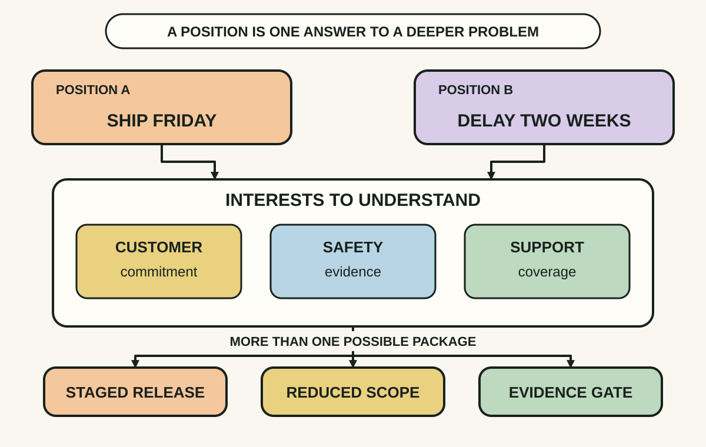
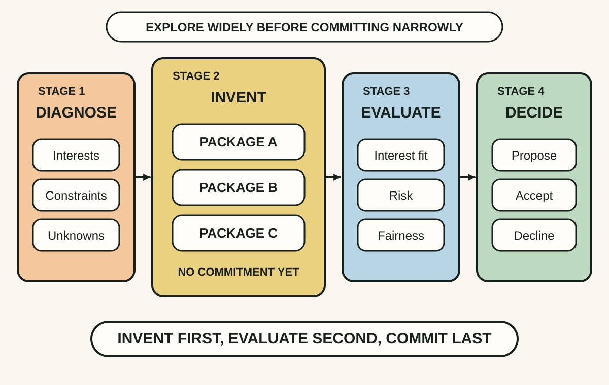
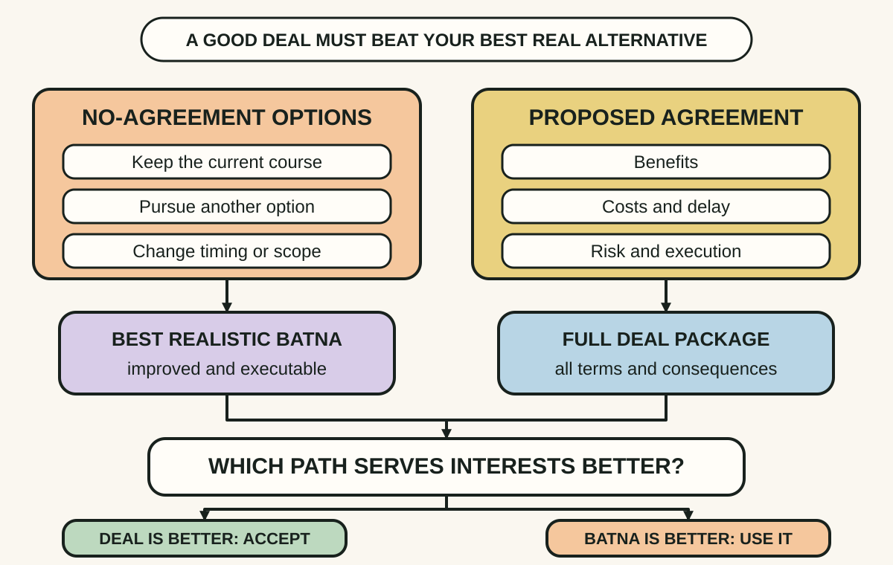

Daily lesson ·
Getting to Yes
Negotiate without turning every disagreement into a contest: uncover interests, invent options before judging them and compare any deal with a real alternative.
Idea 1
Look beneath positions for interests #
The idea
Fisher, Ury and Patton distinguish positions, what people say they want, from interests, the needs, concerns and purposes that make those positions matter. Opposed positions can hide compatible interests or differences that can be traded across issues.
Their instruction to separate the people from the problem does not mean ignoring people. Address perception, emotion and communication directly, while treating the substantive issue as a joint problem rather than evidence that the other person is the problem.

Why it matters
Arguing over fixed demands turns movement into defeat. Interests expose design variables, such as timing, scope, certainty, recognition or risk, that can produce an agreement without pretending the conflict has vanished.
Apply it today
Choose one disagreement and write each side's stated position in one sentence.
Under each position, ask twice: What would this protect or make possible? Share your own interests clearly, then check the other side's rather than guessing.
Caveat or failure mode
Interest disclosure is not automatically safe. A coercive or deceptive counterpart may exploit sensitive information, and some disputes really are about scarce value. Share selectively, verify assumptions and protect confidential constraints, especially where power is unequal.
Idea 2
Invent before you decide #
The idea
The authors argue that premature judgment narrows negotiation. When every suggestion sounds like a commitment, people protect themselves by offering only one safe proposal or by criticising the other side's proposal before exploring it.
Separate option generation from commitment. First invent several ways to meet important interests, including differences in timing, scope, risk, cost or responsibility. Only then evaluate the packages and decide what, if anything, to propose or accept.

Why it matters
A conflict on one visible term can hide several differently valued issues. Multiple packages make trade-offs comparable and reduce the chance that the first plausible answer becomes the only answer.
Apply it today
Take one proposal currently framed as yes or no. List at least four variables that could change without abandoning the goal.
Create three packages with different combinations. Do not rate them until all three are visible, then test each against both sides' important interests.
Caveat or failure mode
More options do not create value when the conflict is genuinely distributive, and endless brainstorming can delay a necessary decision. Set a time limit, protect sensitive information and move to clear evaluation criteria once useful alternatives exist.
Idea 3
Strengthen your BATNA before chasing yes #
The idea
Fisher, Ury and Patton define the BATNA as the best alternative to a negotiated agreement. It is the course of action you would actually take if no agreement is reached, and it protects against accepting a deal merely because time and emotion have made agreement feel like the only successful outcome.
Developing a BATNA requires more than naming a vague fallback. Generate possible alternatives, improve the promising ones and select the best realistic option. A proposed agreement is worthwhile only when it serves your interests better than that alternative after costs, risks and execution are considered.

Why it matters
A concrete alternative reduces pressure, clarifies the minimum useful agreement and reveals when no deal is better than a poor deal. It also directs preparation toward improving real choices rather than performing confidence.
Apply it today
List at least three actions you could take if one upcoming negotiation ends without agreement.
Improve the most promising option until it is credible, then write what a deal must deliver to be better after switching costs, delay and risk.
Caveat or failure mode
A BATNA can be overestimated, change during negotiation or look weaker after hidden costs are counted. The other side may also have an excellent alternative. Recheck assumptions and never invent a competing offer or use the BATNA as a dishonest threat.
Knowledge check · 6 questions
Learning check
Answer all 6, then check your answers. Your first result stays in this browser, and each explanation appears after you check. A 3-question review can appear on the homepage from tomorrow.
6 questions not yet answered.
Today's experiment · 10 minutes
Prepare one negotiation on a single page
- Write your position and the other side's apparent position.
- List two interests each position may be protecting, marking any guess that still needs checking.
- Invent three possible packages without judging them yet.
- List at least two actions available if there is no agreement, then choose and strengthen the best realistic BATNA.
- Write one decision test: I accept only if this package serves my interests better than ___.
Observable result: You finish with two visible positions, four testable interests, three packages, one BATNA and a written decision rule.
Retrieval practice
Spaced recall
- From Superforecasting: before treating this negotiation as unique, what reference class and base rate could improve one important estimate?
Verification
Source notes
These links support the attributed claims and edition details; applications and extensions are labelled in the lesson.
- Penguin Random House: Getting to Yes, third edition
- Harvard Program on Negotiation: Six Guidelines for Getting to Yes
- William Ury: BATNA preparation tool
- University of Michigan Law School: The Pros and Cons of Getting to YES
- International Journal of Conflict Management: cross-cultural review of principled negotiation
One-sentence takeaway